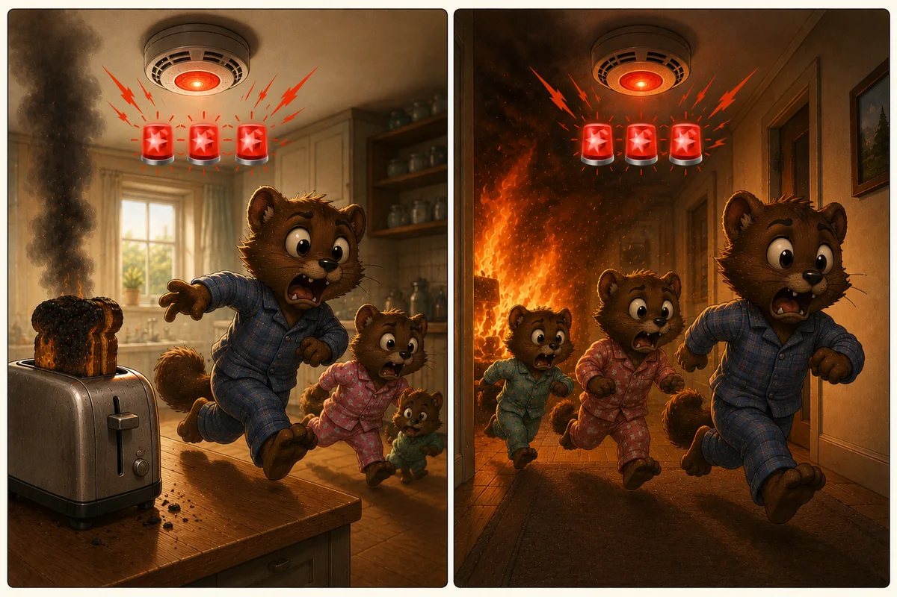

Твой мозг работает по спецификации, вот только спецификация писалась для другой среды
Ты хомо сапиенс, или хомо эректус, или кто там еще был до нас, палеоантропологи до сих пор спорят. Не важно. Важно, что ты стоишь в африканском редколесье сто тысяч лет назад: сухая трава по пояс, колючий кустарник, за ним река.
Внезапно куст шевельнулся!
У тебя есть полсекунды и два варианта. Первый: ты решаешь это был просто ветер, и спокойно идешь дальше. Второй: это лев, и значит надо бежать, выпрыгивая из штанишек. Хотя о чем это я, нет у тебя пока никаких штанишек.
Не суть! Ошибиться ты - хомо сапиенс можешь в обе стороны, только вот цена ошибки будет разной. Численность тех, кто принимал шорох за ветер, по понятным причинам сильно подсократилась.
Отбор оставил паникеров, и это они стали нашими предками.
Именно из-за этого отбора наш мозг так легко попадает в то, что сегодня называют когнитивными ловушками.
Что такое когнитивная ловушка
Представь детектор дыма, который запускает противопожарную систему. У датчика есть порог срабатывания. Если дыма меньше порога, датчик молчит. Если больше, включается сирена, автополив заливает все и вся, а люди в пижамных штанах с подушками в руках выскакивают в панике на лестничную площадку.
Так вот, когнитивная ловушка, в которую попадает твой мозг, это не сломанный механизм. Это порог детектирования опасности, выставленный под условия, которых больше нет.
Твой мозг работает по спецификации. Просто спецификацию писали для другой среды.
И да, в ловушки попадаем мы все. Не только люди с ADHD, не только тревожные, не только те, кто мало спал накануне. ВСЕ, потому что это часть базовой конструкции.
Две ошибки, две цены
Вернемся к кусту. Ошибиться можно двумя способами.
Первый: принять льва за ветер. Цена: ты. И все твое возможное потомство заодно.
Второй: принять ветер за льва. Ты зря испугался, зря побежал, потратил силы и выглядел глупо перед своими. Цена: горсть калорий и минута паники.
В эволюционной психологии это называется теорией управления ошибками, и главное ее наблюдение простое: цена этих двух ошибок катастрофически не равна. Отбор работал не с теми, кто ошибался реже. Он работал с теми, кто ошибался дешевле.
Триста раз зря убежал от ветра и триста первый от льва - дожил до старости, оставил детей. Триста раз спокойно ходил мимо шевелящегося куста... на триста первый порадовал льва, и твое потомство осталось в нереализованных планах.
Ровно та же логика у инженера, который настраивает пожарный датчик. Пропущенный пожар стоит дома. Ложная тревога стоит десяти минут раздражения и мокрого ковра. Цены несопоставимы, поэтому порог ставят низко сознательно, и датчик начинает орать на дым от сигареты и на подгоревший тост.
Правильно настроенный датчик срабатывает впустую чаще чем на реальный пожар. Пожары случаются редко, а тосты подгорают постоянно, поэтому подавляющее большинство срабатываний будет ложными. Это не брак. Это плата за то, что настоящий пожар не будет пропущен.

Эволюционный психиатр Рэндольф Нессе просчитал то же самое для защитных реакций организма и, по собственному признанию, сначала не поверил результату. Получалось, что когда защита обходится дешево, ложные тревоги должны многократно превосходить реакции на реальную опасность. Не изредка. Постоянно. И это оптимум системы, хотя переживается он отвратительно.
Отсюда следует вещь, которая обычно в голову не приходит. Тревога в очереди на почте, паника из-за неотвеченного сообщения, ночная уверенность, что тебя завтра уволят - это не поломка психики. Это просто значит что твоя психика сработала ровно так, как спроектирована. Дешевая реакция, низкий порог, много ложных тревог.
Позитивный сценарий никогда не был приоритетным ведь он не спасал от льва.
Почему плохое весит больше хорошего
Есть вторая часть той же настройки.
Плохое обрабатывается глубже хорошего, запоминается прочнее и опровергается труднее. Психолог Рой Баумайстер собрал исследования по этой теме и специально искал области, где хорошее перевешивает. Не нашел ни одной. Работа так и называется: плохое сильнее хорошего.
Оценки веса расходятся, но порядок примерно одинаковый: негативное событие весит в несколько раз больше равного ему позитивного. Один упрек перекрывает несколько похвал. Десять комплиментов и одно "ой, это плохо" - и вечером ты вспоминаешь только "это плохо".
Логика та же, что с кустом. Хорошее приятно, но для выживания некритично. Плохое критично. Мозг ведет учет так, чтобы ни одна угроза не потерялась, и попутно теряет половину хороших новостей.
Отсюда, кстати, вырастает целое семейство ловушек. Одно неудачное собеседование становится доказательством, что ты никому не нужен. Одна ошибка в отчете перевешивает год нормальной работы. Одна фраза в переписке отменяет три года дружбы. Во всех случаях работает не логика, а бухгалтерия, в которой у плохого коэффициент выше.
Что изменилось
Спецификацию писали под среду, где угрозы были физическими, быстрыми и однозначными: хищники, потопы, пожары и прочее. Ответ на угрозу должен быть мгновенным: бей или беги. Тело для этого и готовили: сердце быстрее, дыхание чаще, внимание сужается до одной точки, кровь отливает от всего, что сейчас не нужно.
Сегодня угроз этого типа почти не осталось. Система при этом никуда не делась и работает по тем же настройкам: низкий порог, приоритет плохого сценария, реакция раньше анализа.
Только теперь она срабатывает на непрочитанное сообщение от начальника. На дедлайн. На прохладное "ок" в переписке. На цифру на весах. На мысль о том, что надо записаться к врачу.
И запускает полный протокол: сердце, дыхание, туннельное внимание, готовность бежать. Проблема в том, что бежать некуда, а ударить нельзя, потому что угроза - это письмо. Реакция включилась целиком, а разрядить ее нечем, и она остается в теле.
Датчик исправен. Пожара нет но есть тостер.
Что с этим делать
Ловушку нельзя выключить. Это конструкция, а не привычка, и никакая техника не перепишет то, что собиралось миллионы лет. Любой, кто обещает "избавить от когнитивных искажений за две недели", продает тебе тумблер, которого нет.
Зато ловушку можно узнать в лицо.
Момент, когда ты говоришь себе "это сработал детектор, а не начался пожар", меняет неожиданно много. Реакция никуда не девается: сердце все еще колотится, мысль все еще крутится. Но она перестает быть доказательством. Тревога больше не означает, что опасность реальна. Она означает, что порог низкий, а датчик чувствительный.
Дальше начинается инженерная часть. На производстве систему, которая срабатывает по проекту, не обвиняют и не уговаривают. Ей меняют условия: убирают источник ложного сигнала, снижают фоновый шум, ставят подсказку, переставляют порядок действий. Датчик оставляют в покое, потому что он не виноват.
С головой работает то же самое. Ты не чинишь мозг. Ты меняешь то, что попадает ему на вход.
Двадцать разборов конкретных ловушек: как каждая выглядит изнутри, от чего она пытается тебя защитить и что делать, когда узнал ее в себе.
Все пять кластеров:
- Мозг не выносит пустоты и заполняет ее худшим - катастрофизация, предсказание будущего, чтение мыслей, эффект прожектора, проекция мотивов.
- Мозг режет мир надвое, потому что так дешевле - черно-белое мышление, ложная дилемма, навешивание ярлыков, сверхобобщение.
- У твоего мозга двойная бухгалтерия - обесценивание позитива, ментальный фильтр, преуменьшение, сравнение.
- Мозг предпочтет виноватого себя бессмысленному совпадению - персонализация, магическое мышление, справедливый мир, долженствование.
- Твоя реакция не является доказательством - эмоциональное обоснование, туннельное зрение, минимизация усилий, телепатия наоборот.
Источники
- Haselton M.G., Buss D.M. Error Management Theory, 2000. Асимметрия цены ошибок первого и второго рода.
- Nesse R.M. The Smoke Detector Principle. Annals of the New York Academy of Sciences, 2001; переиздание: Evolution, Medicine and Public Health, 2019.
- Baumeister R.F., Bratslavsky E., Finkenauer C., Vohs K.D. Bad is stronger than good. Review of General Psychology, 2001.